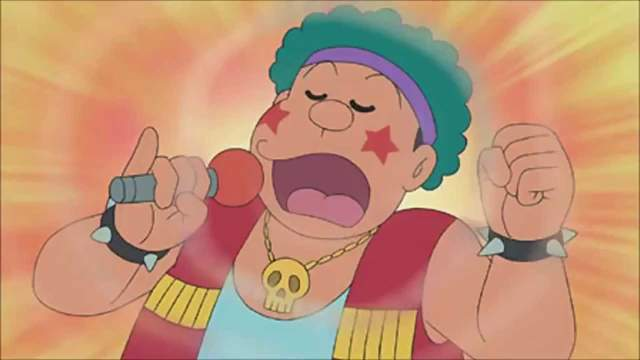

刚田武  昵称：胖虎 别名：技安，大雄 英文名：Kouta Takeshi 日文名：刚田 武シァィンり 生日：1964年6月15日下午5时 星座：双子座 身高：145厘米 体重：34千克 爱好：棒球、唱歌（听多了会减少寿命）、煮饭（难吃死了） 特长：体育、打人、不负责任（在外传中他很负责任） 、有时会有正义感 最害怕的人：妈妈、老师、叔叔 未来职业：超市老板 梦想：成为世界级歌星 最崇拜的人：会柔道的叔叔 宠物：猎狗 （名叫长毛） 他的棒球队：巨人队（胖虎队,"技安"这个名字的由来就是"技安"是"巨人"的音译） |